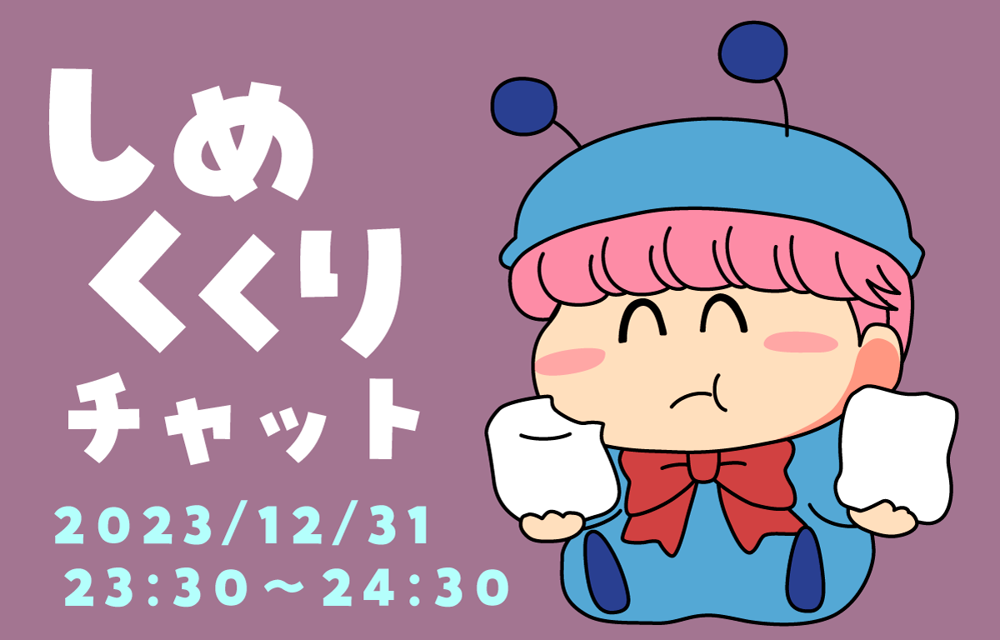
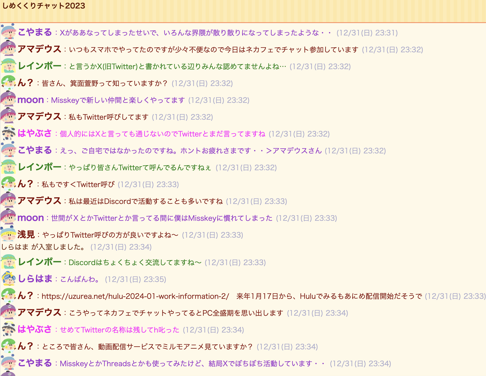
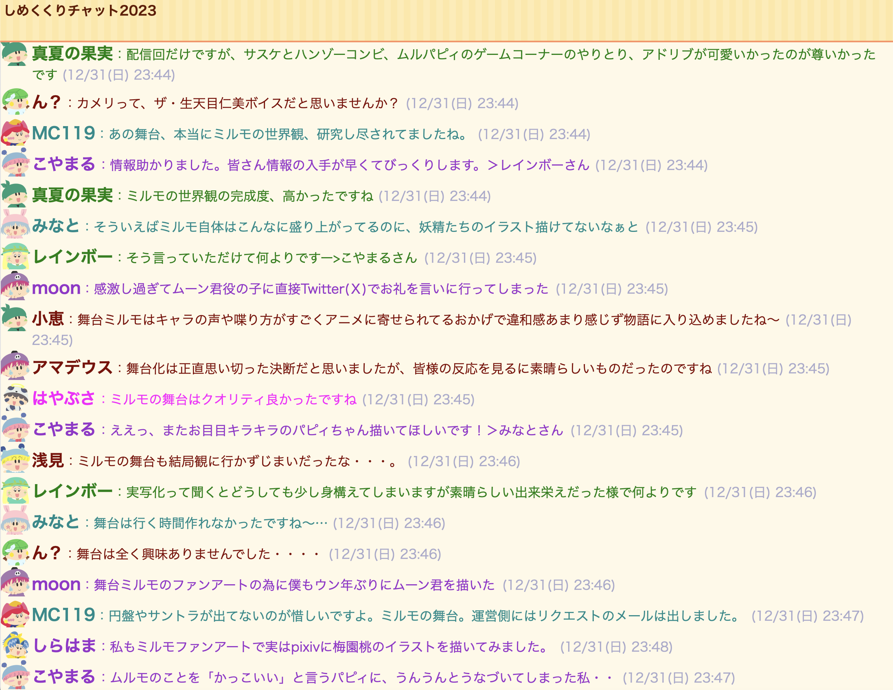
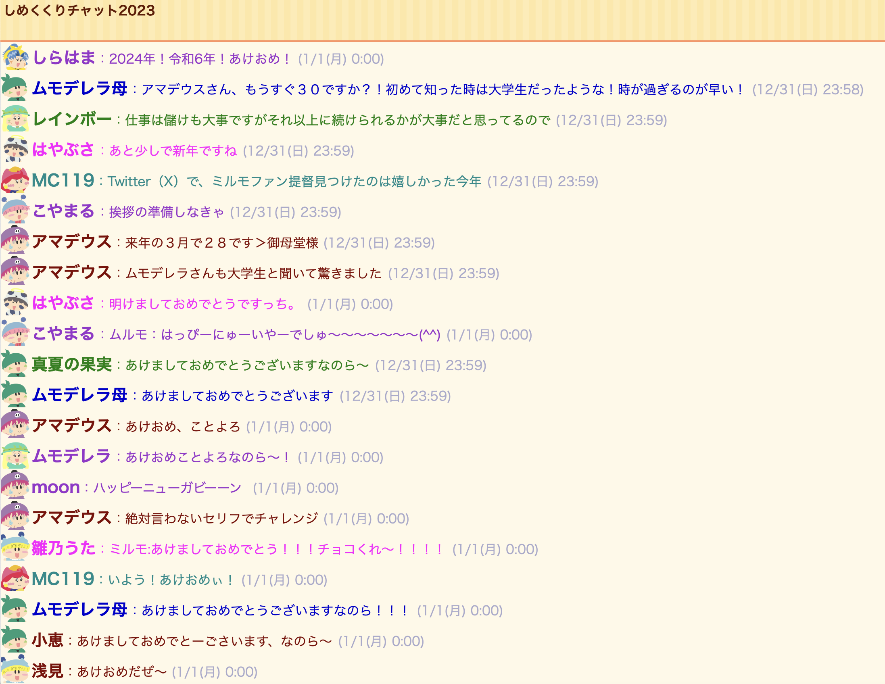
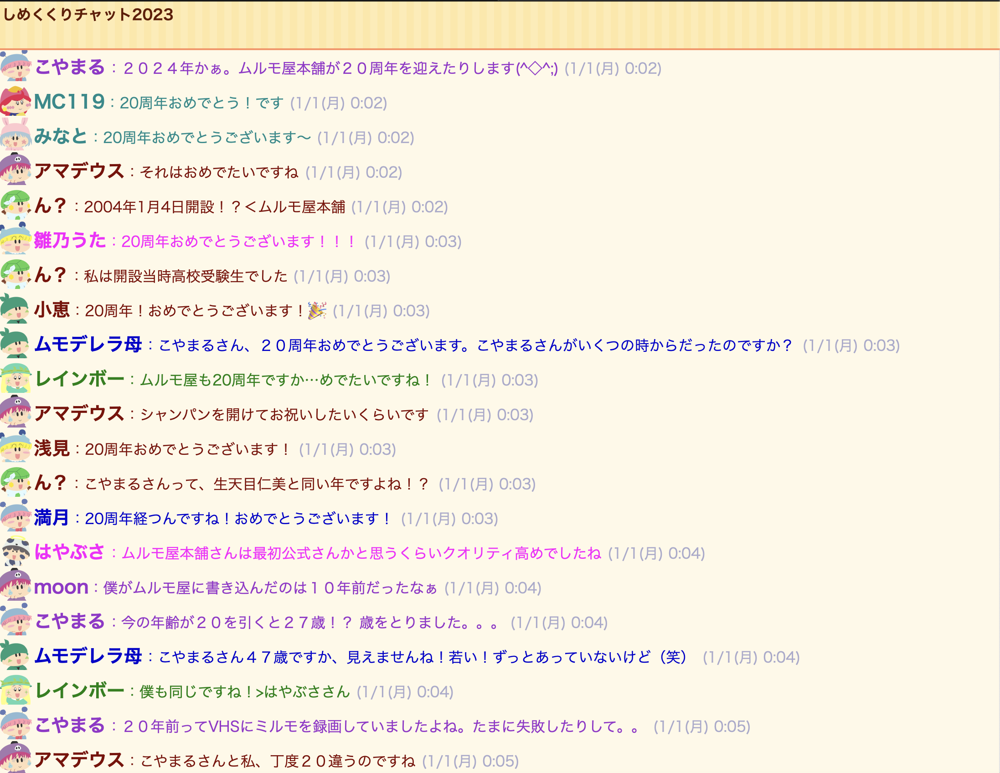

みなさま、あけましておめでとうございます！
2023年の大晦日の夜（2023年12月31日(日) 23:30～翌0:30）に、年末恒例のしめくくりチャットを開催しました。とても多くの方にご参加いただき、新年にふさわしい楽しいチャットになりました。参加者のみなさま、ありがとうございました！ 以下にチャットの模様を少々掲載いたします。
それでは今年もムルモ屋本舗をどうぞよろしくお願いいたします！


ミルモのコミュニケーションの場であるTwitterの変化がありましたが、皆さんしっかり適応されていますね。

２０２３年はミルモの舞台化が一番の話題でしたね。これはオフ会などでもっと語り合いたいところです^^

毎年恒例の新年の挨拶！

ムルモ屋本舗も気がつけば２０周年。たくさんのお祝いのメッセージをくださり、ありがとうございました！
(2024/1/1)